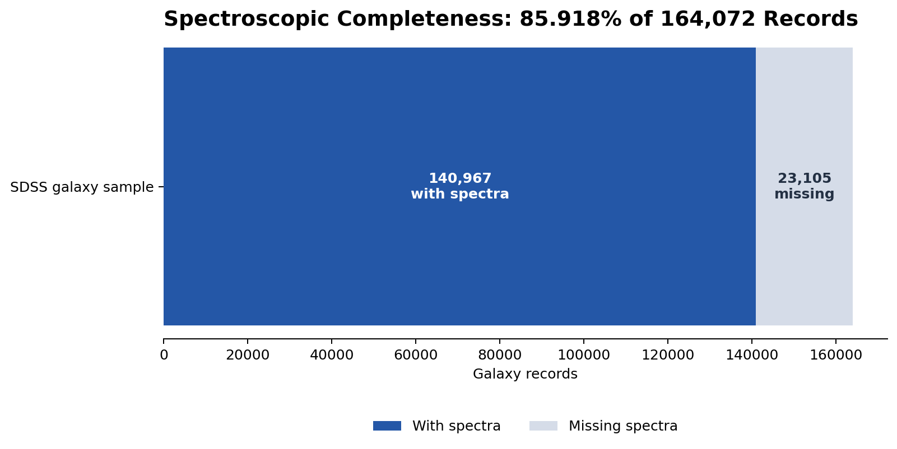

Python · SQL · scientific data quality
SDSS Data Quality and Survey Completeness
A reproducible analysis of survey coverage, missing spectra, filtering logic, and large-scale galaxy data.

What I did
I wrote SQL filters for clean galaxy samples, corrected observed magnitudes for extinction, used Python masks to separate records with and without spectra, and kept the sample counts visible at each step. A second analysis transformed sky coordinates and redshift into Cartesian coordinates for spatial visualization.
Quality mindset
Some later plots produced patterns that did not match the expected physical interpretation. Those outputs were flagged for calculation review rather than presented as settled findings. The public portfolio includes the verified portions of the work and leaves out unfinished Monte Carlo cells.